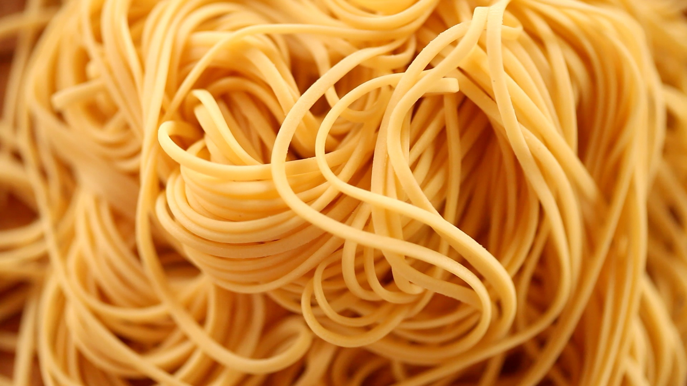

Noodles del mundo
Productos destacados

Udón Sukina
Frescos
Noodles gruesos a base de harina de trigo ampliamente usados en la cocina asiática.

Fettuccine Divella
Secos
Nidos de noodle italiano plano elaborados con huevo, agua y harina.

Noodles instantáneos Takumi
Instantáneos
Noodles que se cuecen en salmuera en menos de 5 minutos. Condimentos incluidos, solo hay que añadir agua.

Linguine Molitalia
Secos
Noodle plano, parecido al spaghetti. Originario de Liguria, Italia